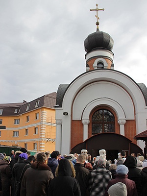

ОБЩИЕ СВЕДЕНИЯ О ХРАМЕ

{kind=link}
В мае 1997 года состоялась первая служба, богослужения проходили в переоборудованном строительном вагончике.
15/29 марта 2001 года архиерейским чином освящено начало строительства храма во имя мцц. Веры, Надежды, Любови и матери их Софии. Сейчас строительство завершено, начато строительство 2-этажного 2-престольного храма. Верхний его престол будет освящен во имя ап. Иоанна Богослова, а нижний — во имя св. блгв. царицы Тамары.
20 декабря 2010 года на земельном участке был совершен торжественный молебен, освящено место и строительную технику по поводу начала строительства храма в честь святого апостола и евангелиста Иоанна Богослова.
24 апреля 2016 года в день входа Господня в Иерусалим (Вербное воскресенье) состоялась первая Божественная литургия в новом храме в честь святой благоверной царицы Тамары Грузинской.
Престольный праздник:
Дни памяти св. ап. и ев. Иоанна Богослова (8/21 мая и 26 сентября/9 октября), мцц. Веры, Надежды, Любови и матери их Софии (17/30 сентября).
Храм открыт:
- с понедельника по пятницу: с 9:00 до 19:00
- в субботу: с 8:00 до 19:00
- в воскресенье: с 8:00 до 19:00
Вечернее Богослужение совершается:
- в пятницу и субботу: в 17:00
Божественная Литургия совершается:
- в субботу: в 9:00
- в воскресенье: в 9:00
Вечерние Богослужения и Божественные Литургии также совершаются в великие праздники согласно расписанию.